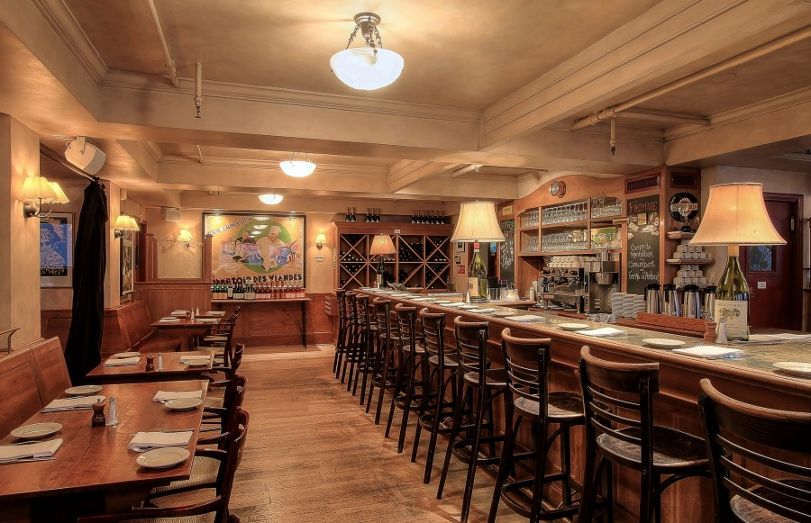

This example is a quick exercise to illustrate how the default, static and fixed to top navbar work. It includes the responsive CSS and HTML, so it also adapts to your viewport and device.
To see the difference between static and fixed top navbars, just scroll.
